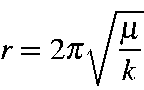
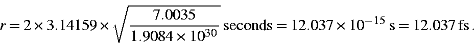
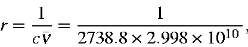
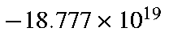
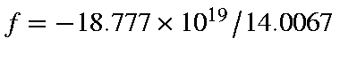
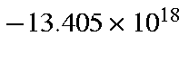
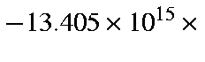
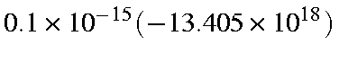
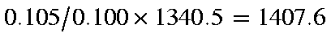
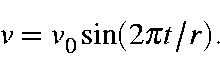

From the energy curve. For a simple harmonic oscillator the period r is
given by:

where k is the force
constant. The reduced mass, μ,
(in amu) of a nitrogen molecule is
14.0067/2 = 7.00335,
and the force-constant, k, can be calculated from:
E-c = (1/2) k(R-Ro)2.
Given
Ro = 1.1038, R = 1.092,
c = 8.25741 and
E = 8.57496 kcal/mol
then:
k = 2x0.31755/(0.0118)
2 (per mole)
k = 4561.2 kcal/mol/A2 (per mole)
k = 1.9084x1030 ergs/cm2 (per mole)
k = 31.69x105 dynes/cm (per molecule)
(Experimentally, for N2, k = 23x105 dynes/cm )
Therefore:

If the frequency is calculated using the other half of the curve (
R=1.118,
E=8.69441), then k=12.333 fs, or k, average, = 12.185 fs.
From the vibrational frequency. Given a "frequency" (wavenumber) of
vibration of N2 of ν =
2738.8
cm-1, the period of
oscillation, in seconds, is given directly by:

or as 12.179 fs.
Summarizing, by three different methods the period of oscillation of N2
is calculated to be 12.1851, 12.185 and 12.179 fs, average 12.183 fs.
A useful check on the dynamics of N2 is to calculate the initial
acceleration of the two nitrogen atoms after releasing them from a
starting interatomic separation of 1.094 Å.
At R(N-N) = 1.094 Å,
G = -44.877 kcal/mol/Å or
 erg/cm. Therefore acceleration,
 cm/sec/sec, or
 cm/s2, which is

Earth surface gravity.
Distance from equilibrium = 0.00980 Å. After 0.1 fs, velocity is

cm/sec or 1340.5 cm/s.
In the DRC the time-interval between points calculated is a complicated
function of the curvature of the local surface. By default, the first
time-interval is 0.105fs, so the calculated velocity at this time should be

cm/s, in the DRC calculation the predicted
velocity is 1407.6 cm/s.
The option is provided to allow sampling of the system at constant
time-intervals, the default being 0.1 fs. For the first few points the
calculated velocities are given in Table 1.
Table 1:
Velocities in DRC for N2 Molecule
| Time |
Calculated |
Linear |
Diff. in |
| |
Velocity |
Velocity |
Velocity |
| 0.000 |
0.0 |
0.0 |
0.0 |
| 0.100 |
1340.6 |
1340.5 |
-0.1 |
| 0.200 |
2678.0 |
2681.0 |
-3.0 |
| 0.300 |
4007.0 |
4021.5 |
-14.5 |
| 0.400 |
5325.3 |
5362.0 |
-36.7 |
| 0.500 |
6628.4 |
6702.5 |
-74.1 |
| 0.600 |
7912.7 |
8043.0 |
-130.3 |
As the calculated velocity is a fourth-order polynomial of the
acceleration, and the acceleration, its first, second and third
derivatives, are all changing, the predicted velocity rapidly becomes a poor
guide to future velocities.
For simple harmonic motion the velocity at any time is given by:

By fitting the computed velocities to simple harmonic motion, a much better fit
is obtained (Table 2).
Table 2:
Modified Velocities in DRC for N2 Molecule
| |
Calculated |
Simple Harmonic |
Diff. |
| Time |
Velocity |
25325.Sin(0.5296t) |
|
| 0.000 |
0.0 |
0.0 |
0.0 |
| 0.100 |
1340.6 |
1340.6 |
0.0 |
| 0.200 |
2678.0 |
2677.4 |
+0.6 |
| 0.300 |
4007.0 |
4006.7 |
+0.3 |
| 0.400 |
5325.3 |
5324.8 |
+0.5 |
| 0.500 |
6628.4 |
6628.0 |
+0.4 |
| 0.600 |
7912.7 |
7912.5 |
0.0 |
The repeat-time required for this motion is 11.86 fs, in good agreement
with the three values calculated using static models. The repeat time
should not be calculated from the time required to go from a minimum to a
maximum and then back to a minimum--only half a cycle. For all real systems
the potential energy is a skewed parabola, so that the potential energy
slopes are different for both sides; a compression (as in this case) normally
leads to a higher force-constant, and shorter apparent repeat time (as in
this case). Only the addition of the two half-cycles is meaningful.